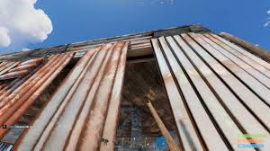
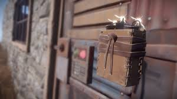
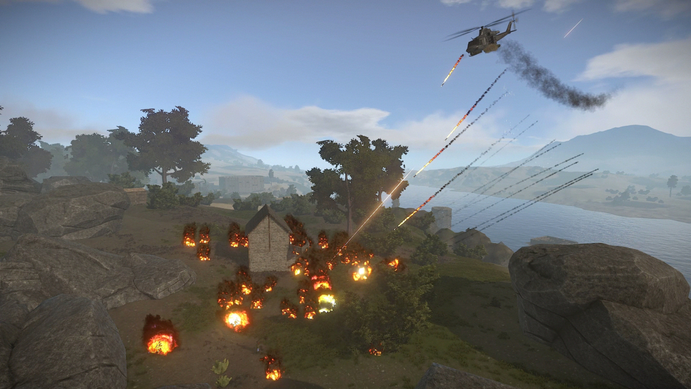

 Eco Raiding is the use of many cheap items such as spears or eoka pistols to break through low tier building
blocks such as wooden doors and stone walls that were placed backwards.
Read More
 Mid Tier raiding is the most common type of raid and is usually done by groups of 2-4 players and is cost
effective. Satchels or explosive ammo is commonly used.
Read More

Raiding using rockets, C4 and auto turrets is usually only done by large groups who have high level gear and is usually done to be as fast as possible sacrificing efficiency.
Read More